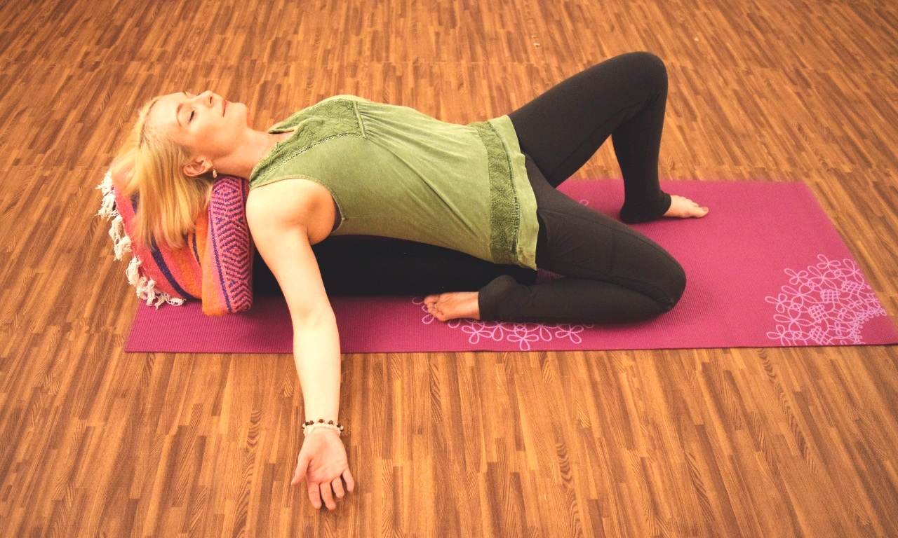

CYCLING
ENDURANCE ASSURANCE
Best fitted for beginners or those looking at a steady base ride, Endurance Assurance classes include intervals above 4 minutes long that can also be used to prepare for races, or recuperate tired legs!
Focus: Base fitness, aerobic capacity, weight loss.
SUPER SPRINT INTERVALS
Time to go full gas! Short sprint intervals up to near all-out efforts, normally anywhere between 15-30 seconds with high repetitions and limited recovery time makes this the most adrenaline rushing class we offer. Perfect to wake those legs up!
Focus: Anaerobic capacity, explosiveness, acceleration.
IRONMANIA
Ironmania classes are a mix of Endurance Assurance (Steady FTP blocks) & Hill Intervals (Inclined gradients). These combined efforts are designed to train both aerobic capacity and muscular strength!
Focus: Aerobic capacity, pedaling efficiency, muscle glycogen storage, weight loss.
HOUR OF POWER
Get your heads down, let the music take you over and hang in there! Hour of Power sessions are intervals ranging from 4-6 minutes long at a sustained pace above your threshold. These intervals can be over a fixed gradient or an FTP based block.
Focus: Oxygen consumption (Vo2 Max), cardiac output, lactate threshold.
HILL INTERVALS
Get climbing! Hill Intervals are inclined gradient efforts which can range anywhere from 3-10 minutes, focused on improving riders’ power to weight ratio, core strength and of course choosing the right gears to get over that hill.
Focus: Aerobic capacity, lactate threshold, core strength, climbing ability, pedaling efficiency.
MOUNTAIN MADNESS

Welcome weekend warriors! Riding up to 2 hours long, Mountain Madness is our longest session available, challenging you to ride real life courses which includes long climbs, descends and rolling hills. This is the session to get you ready for that next triathlon or big race, especially when you’re up racing against everyone in the class!
Focus: Aerobic endurance, self pacing, gearing management, cardiac output.
RACE OF TRUTH
Ready to race? Challenge yourself by going heads on with everyone else in the class. The session will be course structured where riders race with each other on real courses, complete with ascends and descends. Choosing the right gears and pushing yourself to your limit might crown you class champion!
Focus: Self pacing, gearing management.
YOGA
FUNDAMENTALS
The very basics of yoga will be covered in this class, with a focus of building a strong foundation for your practice. This is a multi level Hatha based class.
CORE
Work the major muscles in the body to build strength and stabilisation which results in enhanced athlete performance. Get ready to fire up that core! Inversions may be introduced.
RESTORATIVE YIN
A slower practice where poses are passively held for long periods of time. The aim is to calm the mind and nervous system as well as to improve flexibility by penetrating deep into the connective tissues and joints, helping to release tension, blockages and balancing the energy flow throughout the body.
FLOW
A dynamic and energetic class that helps you connect breath to movement and increasing the heart rate. Find yourself continuously moving through postures fluidly, encouraging focus and awareness. A consistent “Fundamentals” practice is highly recommended.
YOGA THERAPY
A healing practice focusing on improving flexibility, range of movement, and bringing the body and mind back to a state of balance. Students will be guided to practice with proper alignment, engagement of the muscles and mindfulness in a functional way that works for their body.
ARM BALANCE AND INVERSIONS
Power up your practice and explore arm balancing postures and/or inversions safely, with proper techniques and understanding. This is a challenging and stimulating class. A consistent Fundamentals, Core and Flow practice is recommended.
STRENGTH
KETTLEBELL ENDURANCE

A movement-based workout that is technique focused and while it can be intensely pumping, this class is suitable for all levels.
Key benefits include dynamic fat burning movements like kettlebell swings as well as slow conditioning moves like kettlebell cleans. This workout improves full core engagement, strength and stability as muscles work hard to keep joints aligned.
STRENGTH FOR ATHLETES
A low impact session that concentrates on strengthening the muscles used for your posture during endurance races. This workout will also work on fast twitch muscles that are not usually trained during endurance cardio training, the same muscles needed for short power bursts on uphill rides or finish line sprints.
This exercise aims to complement a Triathlete’s intensive swim-bike-run training program by focusing on the major muscles activated in each of these disciplines. This is done by mimicking the various discipline movements, e.g Runner’s swing and Rotational mobility for swims and strong back and shoulders required for swimming or aero positions during a triathlon. These movements are also used in our everyday life, so come on in even if you aren't the racing sort!